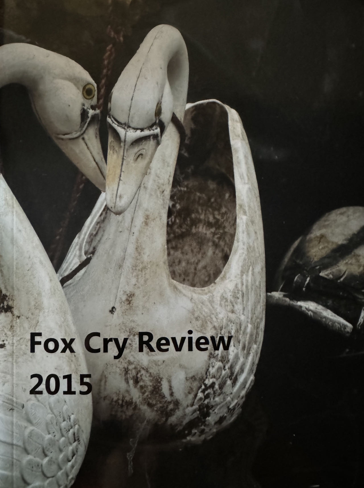

October 30, 2024
I feel lonely right now, probably because I only slept maybe 2h last night, triggered the fire alarm and so a little bit neurasthenia? People don't really talk with me, it's just a superficial kindly conversation and relationship: they don't hate me and their upbringing makes them talk with me in a polite way.
But I guess I also feel like I don't really need to have a real friendship, relationship and so on. That would be a gift, if it happens to my life, even though it would bring me a sense of insecurity — because I know if someone truly entered my heart, losing them would probably kill me. I don't really think I have had a real friend so far in all periods of my life.
But I think now I feel fulfilling with my focus on myself. For now, I just don't depend emotionally on others and don't need a relationship for self-worth. Honestly, I don't even miss my family that much. It sounds cold, but I just want to focus on meaningful goals — my creations, growth, strength, and power.
I once shared a quote on social media from a great writer (I forget the name) who said that when we abstractly love humanity, we're actually trying to love ourselves. I tear up at masterpieces created by humankind. The Civilization. I love our species, I value my intelligence, and that's what I truly appreciate about life. I just love to be the glitch, the deviation in this human-made Matrix.
So who is the weirdo in the corner today? What are they paying attention to? What is fringey?
November 11, 2024

Fox Cry Review · 2015
I saw those pamphlets today, it named Fox Cry Review, I took one of them, and on the cover were two ceramic swans soaking unattended in a pool. The colors on them had long since blurred, and their once beautiful white feathers were covered in stains and limescale. It's a booklet that was printed and edited nine years ago.
It still looks as good as new when you turn it over, but in six months' time it and the other years' compilations would be as dormant as this small campus that was about to be shut down, and I didn't want to see them discarded in a landfill, but even if I, or anyone else, took it away and remembered it, or if my overly idealistic idea of re-editing another Fox Cry Review after nine years became a reality — which is unlikely — what could any of this change? Its editors, the creators of the included works might remember them at some sporadic times, and I wonder where these creators are now. This volume is so new and light, yet the curse of oblivion is so heavy and lingering.
Ideals are peaceful, history is violent.
November 19, 2024
Lives are so fragile. I guess there's no meaning, only sparks of beautiful moments and peace. Reside your heart in the void and the present; it's the time you're looking at the sky at night and wondering where the truth lies. Feel no pain, yet no happiness. You stand there as it is — you are the creation of this universe, and the only absolute is this cycle of destruction and reunion. So I think we all come back together after it all. We unite, we evolve, we cross time and space — by love, in dignity. May those who forever sleep in the fire rest in their peace.
Grandma, I miss you so much, but now I'm not afraid of death anymore. I know we will return to each other again, no matter when or in which form. I'm sorry, I love you forever, and I have already grown into the person who has the courage to face my love and my heart.